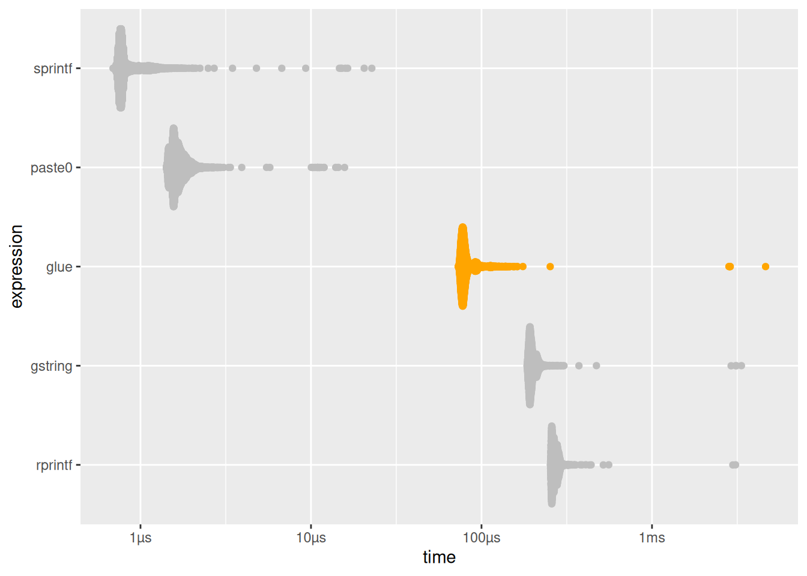
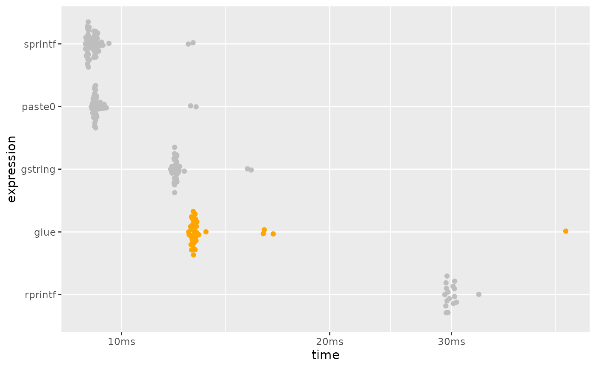

library(glue)
library(ggplot2)
library(bench)
library(dplyr)
#>
#> Attaching package: 'dplyr'
#> The following objects are masked from 'package:stats':
#>
#> filter, lag
#> The following objects are masked from 'package:base':
#>
#> intersect, setdiff, setequal, unionGlue is advertised as
Fast, dependency free string literals
So what do we mean when we say that glue is fast? This does not mean glue is the fastest thing to use in all cases, however for the features it provides we can confidently say it is fast.
A good way to determine this is to compare its speed of execution to some alternatives.
-
base::paste0(),base::sprintf(): Functions in base R implemented in C that provide variable insertion (but not interpolation). -
R.utils::gstring(): Provides a similar interface as glue, but uses${}to delimit blocks to interpolate. -
pystr::pystr_format()1,rprintf::rprintf(): Provide an interface similar to python string formatters with variable replacement, but not arbitrary interpolation.
Note: stringr::str_interp() was previously included in
this benchmark, but is now formally marked as “superseded”, in favor of
stringr::str_glue(), which just calls
glue::glue().
Simple concatenation
bar <- "baz"
simple <- bench::mark(
glue = as.character(glue::glue("foo{bar}")),
gstring = R.utils::gstring("foo${bar}"),
paste0 = paste0("foo", bar),
sprintf = sprintf("foo%s", bar),
rprintf = rprintf::rprintf("foo$bar", bar = bar)
)
simple %>%
select(expression:total_time) %>%
arrange(median)
#> # A tibble: 5 × 6
#> expression min median `itr/sec` mem_alloc `gc/sec`
#> <bch:expr> <bch:tm> <bch:tm> <dbl> <bch:byt> <dbl>
#> 1 sprintf 751ns 832.02ns 1149336. 0B 0
#> 2 paste0 1.46µs 1.57µs 611045. 0B 61.1
#> 3 glue 99.59µs 104.73µs 9387. 140.44KB 24.3
#> 4 gstring 216.09µs 223.2µs 4392. 2.45MB 14.5
#> 5 rprintf 272.65µs 278.94µs 3524. 503.39KB 8.20
# plotting function defined in a hidden chunk
plot_comparison(simple)
#> Warning: The `trans` argument of `continuous_scale()` is deprecated as of ggplot2
#> 3.5.0.
#> ℹ Please use the `transform` argument instead.
#> This warning is displayed once every 8 hours.
#> Call `lifecycle::last_lifecycle_warnings()` to see where this warning was
#> generated.
While glue() is slower than paste0 and
sprintf(), it is twice as fast as gstring(),
and rprintf().
Although paste0() and sprintf() don’t do
string interpolation and will likely always be significantly faster than
glue, glue was never meant to be a direct replacement for them.
rprintf::rprintf() does only variable interpolation, not
arbitrary expressions, which was one of the explicit goals of writing
glue.
So glue is ~2x as fast as the function (gstring()),
which has roughly equivalent functionality.
It also is still quite fast, with over 8000 evaluations per second on this machine.
Vectorized performance
Taking advantage of glue’s vectorization is the best way to improve
performance. In a vectorized form of the previous benchmark, glue’s
performance is much closer to that of paste0() and
sprintf().
bar <- rep("bar", 1e5)
vectorized <- bench::mark(
glue = as.character(glue::glue("foo{bar}")),
gstring = R.utils::gstring("foo${bar}"),
paste0 = paste0("foo", bar),
sprintf = sprintf("foo%s", bar),
rprintf = rprintf::rprintf("foo$bar", bar = bar)
)
vectorized %>%
select(expression:total_time) %>%
arrange(median)
#> # A tibble: 5 × 6
#> expression min median `itr/sec` mem_alloc `gc/sec`
#> <bch:expr> <bch:tm> <bch:tm> <dbl> <bch:byt> <dbl>
#> 1 paste0 8.27ms 8.31ms 118. 781.3KB 6.34
#> 2 sprintf 9.09ms 9.19ms 109. 781.3KB 4.19
#> 3 gstring 11.08ms 11.2ms 89.1 1.53MB 8.91
#> 4 glue 11.61ms 12.32ms 79.9 2.29MB 9.13
#> 5 rprintf 29.68ms 29.8ms 33.5 3.05MB 10.3
# plotting function defined in a hidden chunk
plot_comparison(vectorized)